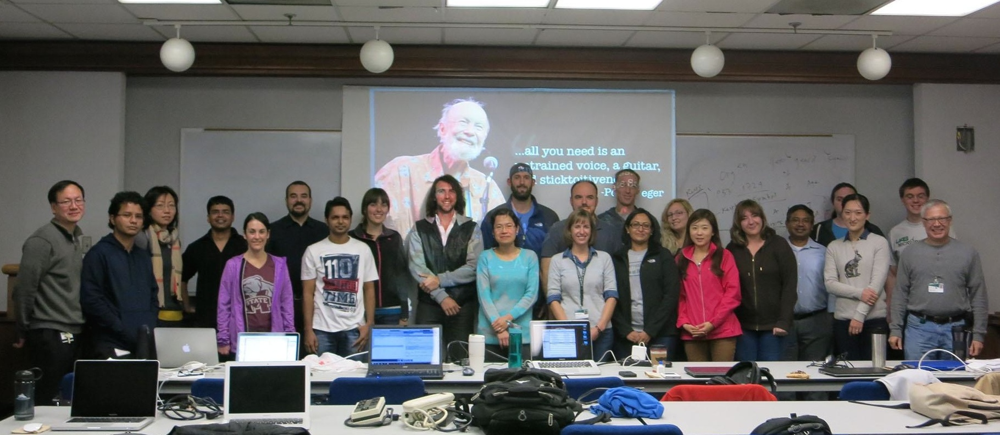
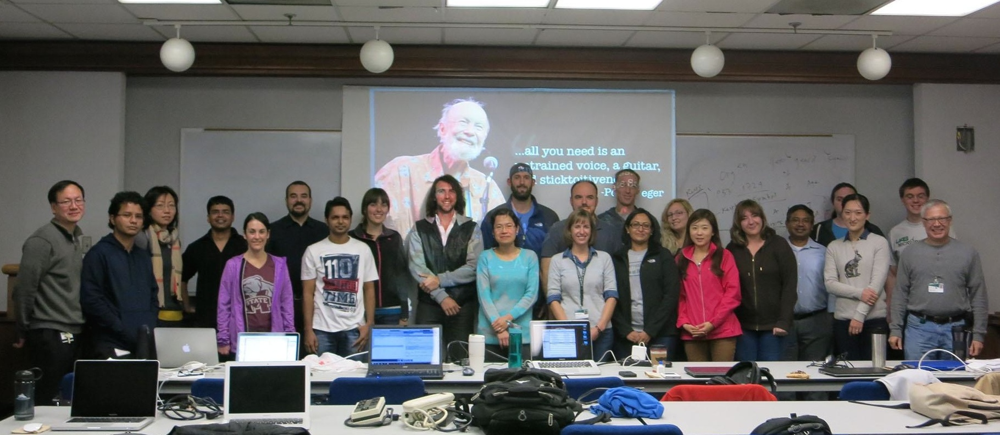

CB2-101: Introduction to Scientific Computing
The second edition of the CB2-101 Introdution to Scientific Computing
course (6-21 November, 2014)
was successfully completed by 22 participants (see the picture).
In this page we include all the material used during the course, and the evaluation anonymously submitted by the students. We would like to thank the participants for the fruithful comments that will allow us to improve the quality of our course.

In this page we include all the material used during the course, and the evaluation anonymously submitted by the students. We would like to thank the participants for the fruithful comments that will allow us to improve the quality of our course.

- Materials
Registration form Initial Survey Basic Knowledge in Informatics. Introduction to Linux November 6-7, 2014. Computers and Programming Languages November 10, 2014. Introduction to Python November 11, 2014. Data Structure in Python November 12-13, 2014. Advanced Functions and Modules November 14, 2014. Introduction to R November 17-18, 2014. Reproducible research in R November 19-20, 2014. R in bioinformatics November 20-21, 2014. Final problem set November 21, 2014. Anthem of CB2-101 Computer Love, Album: Computer World, Kraftwerk (1981). - Evaluation
In this page we included the evalaution form anonymously compiled by the participants to evaluate the quality of our course. Answers submitted with numbers from 1 (worst) to 10 (best) have been included in the following statistics calculated by R. The evaluation form was compiled by 14 participants which rated the course with an average score of 8.6 over 10. The received positive and negative comments will be publised soon.

Data - Rscript
- Previous Editions
February 2014: The previous edition of the CB2-101 course (17-28 February, 2014) was succesfully completed by 12 participants (more information are available here).
University of Alabama at Birmingham.
619 19th St. South, WP220.
Birmingham (AL), 35249 (USA).